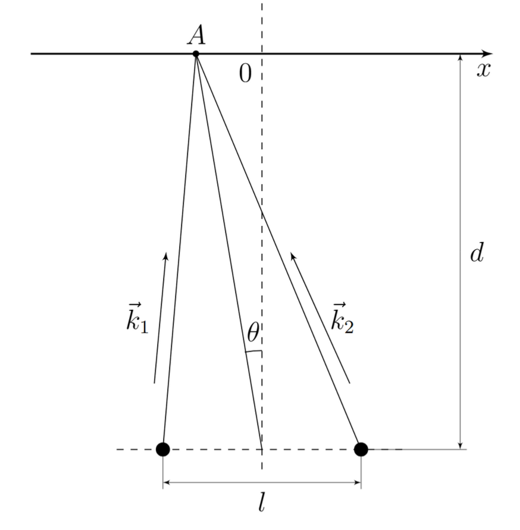
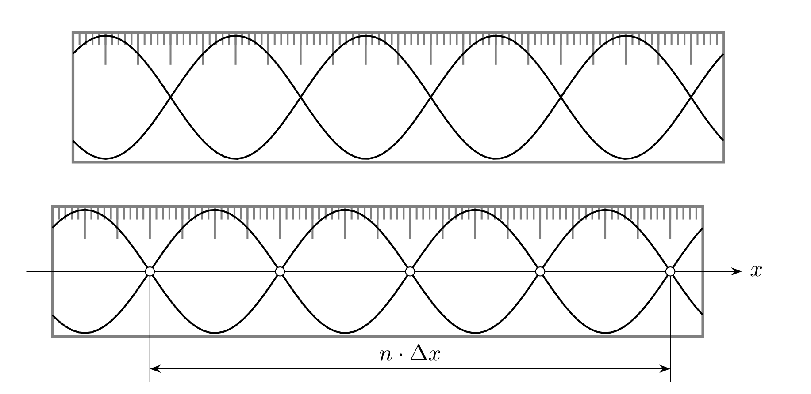
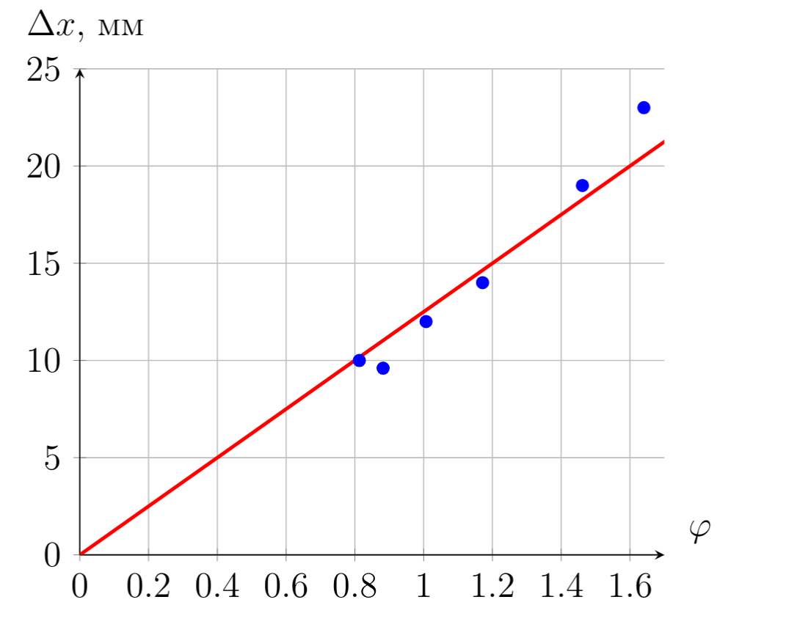
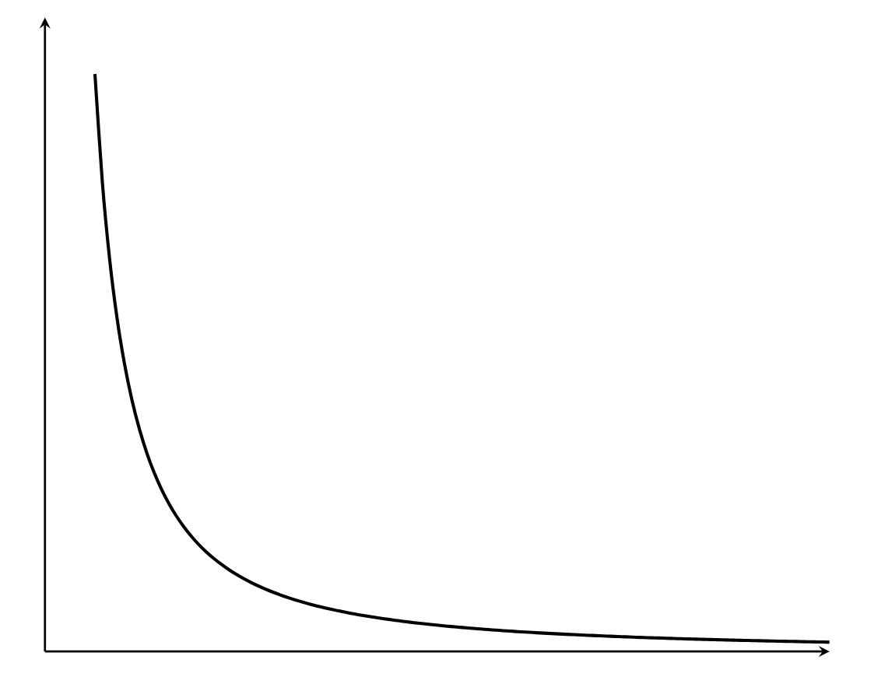
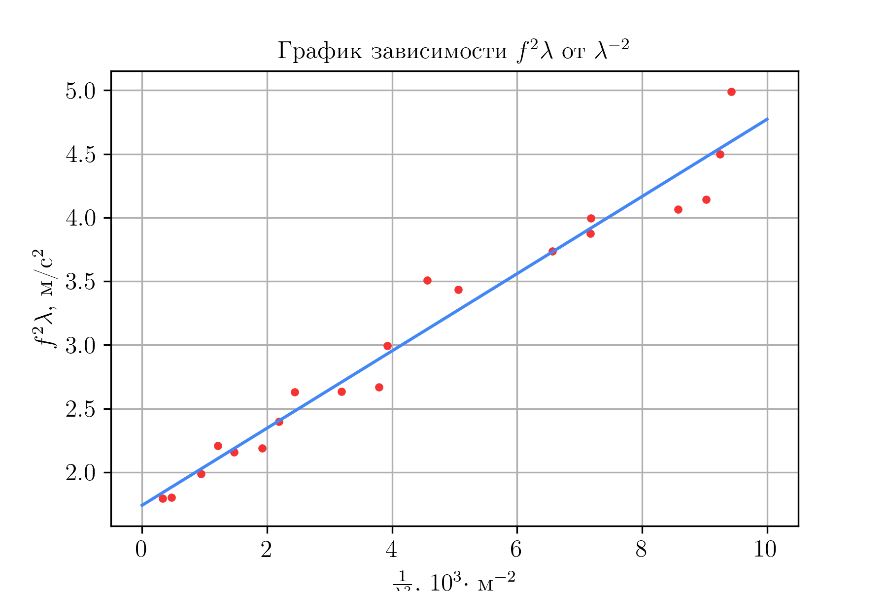

Y26 (2026) — English translation
To avoid damage, we will not use the equipment.
Consider the classical Young interference scheme:
Two waves from point sources with wave vectors $\vec k_1$ and $\vec k_2$ arrive at point $A$ located at coordinate $x_A$ (in the figure $x_A < 0$). Let us find cCoordinate of the surface at point $A$. $$z_A = \dfrac{A}{\left((x_A + \frac{l}{2})^2 + d^2\right)^{\frac{1}{4}}} \cos\left(\omega t - k \left((x_A + \frac{l}{2})^2 + d^2\right)^{\frac{1}{2}}\right) + \dfrac{A}{\left((x_A - \frac{l}{2})^2 + d^2\right)^{\frac{1}{4}}} \cos\left(\omega t - k \left((x_A - \frac{l}{2})^2 + d^2\right)^{\frac{1}{2}}\right)$$ Expand this expression in the approximation $x \ll d,~l$ and применим ормулу for sum cosine. For удобства introduce notation $r_0 = \sqrt{\left(\frac{l}{2}\right)^2 + d^2}$. $$z_A \approx \dfrac{2A}{\sqrt{r_0}}~ \cos \left(\frac{kx_Al}{2r_0}\right)~\cos(\omega t - kr_0)$$ Observe предсказанные standing wave along axis $x$. Or considering this effect from the point of view of the average amplitude, we see interference. Then the distance between neighboring nodes/antinodes:
Let us find cCoordinate of the surface at point $A$.
$$z_A = \dfrac{A}{\left((x_A + \frac{l}{2})^2 + d^2\right)^{\frac{1}{4}}} \cos\left(\omega t - k \left((x_A + \frac{l}{2})^2 + d^2\right)^{\frac{1}{2}}\right) + \dfrac{A}{\left((x_A - \frac{l}{2})^2 + d^2\right)^{\frac{1}{4}}} \cos\left(\omega t - k \left((x_A - \frac{l}{2})^2 + d^2\right)^{\frac{1}{2}}\right)$$
Let us expand this expression in the $x \ll d,~l$ approximation and apply the formula for the sum of cosines. For convenience, we introduce the notation $r_0 = \sqrt{\left(\frac{l}{2}\right)^2 + d^2}$.
$$z_A \approx \dfrac{2A}{\sqrt{r_0}}~ \cos \left(\frac{kx_Al}{2r_0}\right)~\cos(\omega t - kr_0)$$
We observe the predicted standing waves along the $x$ axis. Or considering this effect from the point of view of the average amplitude, we see interference.
Then the distance between neighboring nodes/antinodes:

$$d = (12.5 \pm0.5)~cm$$ Комметарий. Error $0.5~cm$ choose, thus.to. $d$ varies depending on the amplitude of water vibrations,
Comment. The error $0.5~cm$ was chosen because $d$ varies depending on the amplitude of water vibrations,
The greatest accuracy is obtained by measuring the distance using the method of rows between nodes. It is necessary to measure the distance between nodes and not antinodes, since: The engine rotates quite unstable, as a result of which the amplitude can change over time at the same point, as a result of which a false maximum can be observed. In reality, in such waves there are higher harmonics $2f$, $3f$, etc. with smaller amplitudes that do not shift the position of the zero (or minimum) of the amplitude, but can significantly shift the maximum. When assembling an experimental setup, it is easy to verify that the minimums are visible much more clearly than the maximums. We will measure the distance between non-neighboring nodes, thus measuring $m \Delta x$. The distance should be measured between not too many nodes (so that their coordinates satisfy the inclusion $x_n \in \left[-\frac{l}{2}; \frac{l}{2}\right]$). The process of measuring minimums is to move the laser holder along the wall of the container so that the laser beam remains perpendicular to the line of movement. The ruler shows a picture of a laser dot oscillating vertically. By looking for positions in which the amplitude of these oscillations is zero (i.e. the surface is motionless), we find the positions of the nodes. We measure the distance between the positions of the angles on the ruler. This distance is equal to the distance between nodes, because the laser beam moved parallel to the $Ox$ axis and the ruler.
You should measure the distance between nodes and not antinodes, since:
When assembling an experimental setup, it is easy to verify that the minimums are visible much more clearly than the maximums.
We will measure the distance between non-neighboring nodes, thus measuring $m \Delta x$. The distance should be measured between not too many nodes (so that their coordinates satisfy the inclusion $x_n \in \left[-\frac{l}{2}; \frac{l}{2}\right]$).
The process of measuring minimums is to move the laser holder along the wall of the container so that the laser beam remains perpendicular to the line of movement. The ruler shows a picture of a laser dot oscillating vertically. By looking for positions in which the amplitude of these oscillations is zero (i.e. the surface is motionless), we find the positions of the nodes. We measure the distance between the positions of the angles on the ruler. This distance is equal to the distance between nodes, because the laser beam moved parallel to the $Ox$ axis and the ruler.

Let's set and measure the distance $d=125 ~\mathrm{mm}$. The experimental data is shown in the table below.
The dependence of $\Delta x$ on $\varphi=\dfrac{\sqrt{\left(\frac{l}{2}\right)^2+d^2}}{l}$, according to the theory, is linear. Let's recalculate the experimental points and draw a graph.
In this graph, the most accurate point is $(0,0)$. The optimal execution of the straight line is precisely the execution shown on the graph because the measurement error $d$ and $l$ begins to significantly distort the measurements at small $l$.

The wavelength is the slope of this dependence. Using the graph we get:
The error is estimated based on the spread of the slope coefficient values.

Commentary on error assessment. $l$ is the distance between point sources, which in reality are not point sources.
For each frequency we will find the wavelength by measuring the distance between several nodes. The measurement results are shown in the table below
The dependence of $f^2\lambda$ on $\lambda^{-2}$, according to the theory, is linear. Let's recalculate the experimental points and draw a graph.

Using MNC,